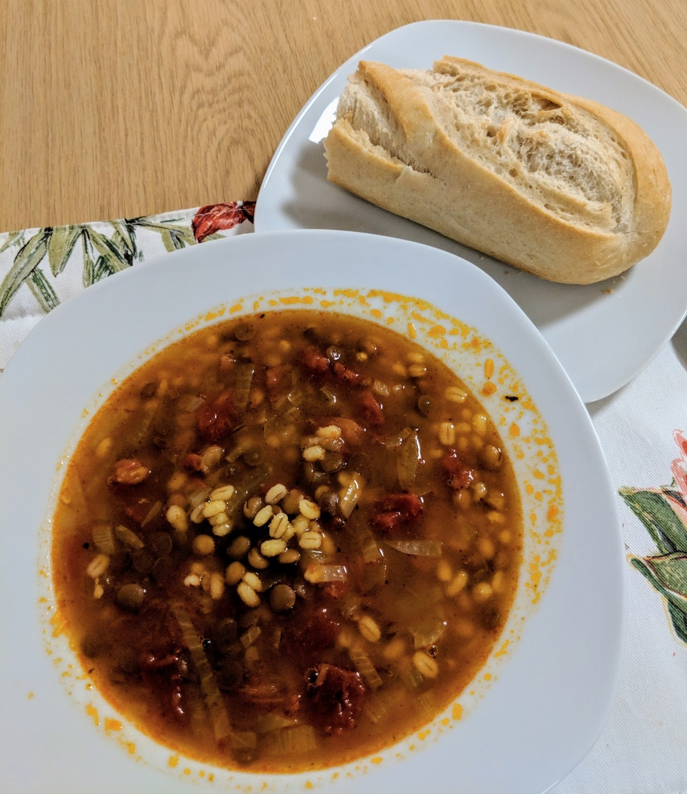

Home
(current)
Soup
Tomato and barley soup
For when it's cold outside.

Ingredients
5ml canola oil
1 large onion
2 garlic cloves
1 tsp curry powder
1 chicken stock cube (in 1.5 litres of water)
1 cup red lentils
½ cup pearl barley
1 tin chopped tomatoes
Heat oil in large saucepan, finely chop the onion and brown together with the garlic. Add curry powder and cook for a minute.
Stir in water, stock, lentils, barley, tomatoes, and pepper.
Bring to the boil, then simmer for 45 minutes - 1 hour (until lentils and barley are tender).
Serve with a sprinkling of parsley.
Serves 4-6.